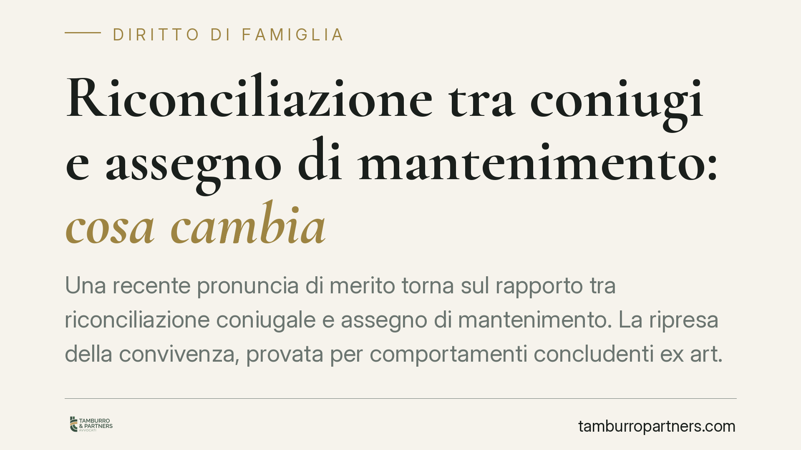

Riconciliazione tra coniugi e assegno di mantenimento: cosa cambia
Una recente pronuncia di merito torna sul rapporto tra riconciliazione coniugale e assegno di mantenimento. La ripresa della convivenza, provata per comportamenti concludenti ex art. 157 c.c., può far cessare gli obblighi derivanti dalla separazione. Più delicato è il tema dei crediti già maturati, che segue regole proprie. Vediamo cosa dice la norma e cosa ne deriva in concreto.

Il caso
Una pronuncia di merito (segnalata come Tribunale di Enna, sent. n. 401/2026) affronta gli effetti della riconciliazione tra coniugi separati sul diritto all'assegno di mantenimento. Il giudice ha ritenuto che la ripresa stabile della vita comune, desunta da comportamenti concludenti, incida sugli obblighi nati con la separazione.
Nota di prudenza. Il riferimento alla sentenza reca l'anno 2026: dato non pienamente verificabile al momento della redazione. Il contenuto va quindi considerato come spunto di riflessione, non come precedente consolidato. Trattandosi inoltre di decisione di merito, non esprime un principio vincolante di legittimità.
Inquadramento normativo
L'art. 157 del Codice civile disciplina la cessazione degli effetti della separazione personale. Prevede che i coniugi possano far cessare gli effetti della sentenza di separazione, senza bisogno di un provvedimento del giudice, "con una espressa dichiarazione o con un comportamento non equivoco incompatibile con lo stato di separazione".
La norma ammette dunque due vie: la riconciliazione formale (dichiarazione espressa) e quella per fatti concludenti, cioè comportamenti oggettivamente incompatibili con la vita separata. L'esempio tipico è la ripresa stabile della convivenza, accompagnata da un recupero effettivo del rapporto affettivo e materiale, non da una semplice coabitazione occasionale.
La riconciliazione fa venir meno lo stato di separazione e, con esso, gli obblighi che da quello stato derivano. L'assegno di mantenimento disposto in sede di separazione trova la propria ragione nella separazione stessa: cessata questa, viene meno il titolo degli obblighi futuri.
Obblighi futuri e crediti già maturati: una distinzione necessaria
Qui sta il punto più delicato. Occorre distinguere due piani.
Sul piano degli obblighi futuri, la riconciliazione produce effetti dal momento in cui si realizza: cessato lo stato di separazione, non maturano più ratei di mantenimento.
Diverso è il discorso sui crediti già maturati prima della riconciliazione. L'orientamento prevalente tende a considerarli esigibili, salvo che risultino oggetto di rinuncia. La riconciliazione, di per sé, non equivale automaticamente a rinuncia ai ratei arretrati: perché ciò accada occorre una volontà abdicativa, che può anche desumersi dai comportamenti delle parti ma va accertata in concreto, caso per caso.
È quindi improprio affermare in termini assoluti che la riconciliazione cancelli ogni pretesa sugli arretrati. Il tema richiede una valutazione specifica, che tenga conto delle condotte successive alla ripresa del rapporto.
La questione delle spese
Nel caso in esame si registra una pronuncia sulle spese secondo il criterio della soccombenza virtuale. L'istituto opera tipicamente quando viene meno la materia del contendere: il giudizio non arriva a una decisione sul merito perché il contrasto si è esaurito, e il giudice ripartisce le spese valutando chi, ipoteticamente, sarebbe risultato soccombente se la causa fosse proseguita.
Implicazioni pratiche
Per chi si è separato e ha successivamente ripreso la vita comune, la portata della decisione è duplice.
Da un lato, la ripresa stabile del rapporto può far cessare l'obbligo di versare l'assegno per il periodo successivo alla riconciliazione. Dall'altro, i ratei già scaduti seguono regole proprie e non si estinguono in modo automatico.
Il nodo probatorio è centrale. Chi invoca la riconciliazione deve dimostrarla; chi la contesta può portare elementi di segno opposto. La prova della ripresa stabile del rapporto grava su chi intende farne discendere effetti giuridici.
Cosa fare in concreto
- Documentate la data di ripresa della convivenza: residenza comune, utenze, movimenti bancari condivisi, testimonianze possono concorrere a provare la riconciliazione.
- Verificate lo stato dei ratei: distinguete tra importi maturati prima della ripresa del rapporto e periodi successivi.
- Valutate la forma della riconciliazione: una dichiarazione espressa riduce le incertezze rispetto alla sola prova per fatti concludenti.
- Conservate le comunicazioni rilevanti tra i coniugi sul tema del mantenimento, utili a ricostruire un'eventuale volontà di rinuncia.
- Considerate che si tratta di pronuncia di merito: non è un principio consolidato di legittimità e può non orientare altri giudici.
Un chiarimento finale
La decisione segnalata offre uno spunto, ma non costituisce regola generale. La distinzione tra effetti sugli obblighi futuri e sorte dei crediti già maturati resta il profilo più sensibile e va affrontata alla luce del caso concreto.
Contributo informativo a cura di Tamburro & Partners - Avv. Giuseppe Tamburro. Non costituisce parere legale.
Ogni famiglia ha il suo equilibrio.
Separazione, divorzio, affidamento, assegno: se vuoi un confronto riservato su una specifica situazione, scrivi allo studio. Ti rispondiamo entro un giorno lavorativo.